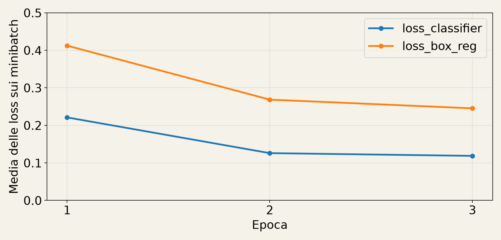
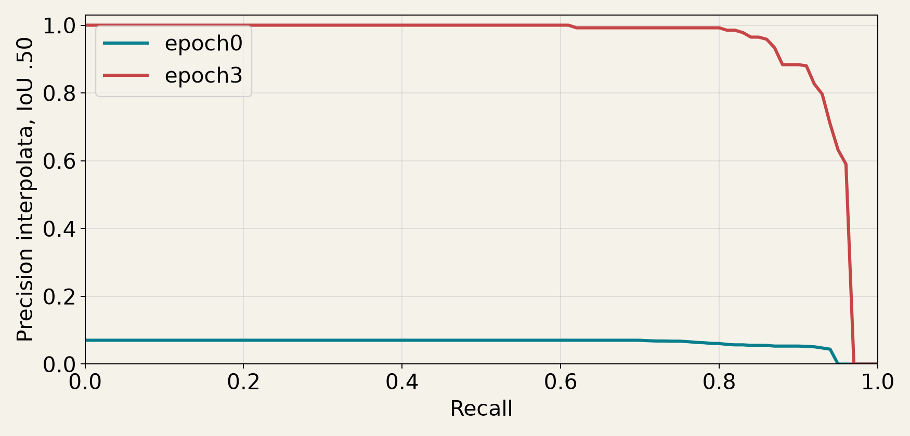
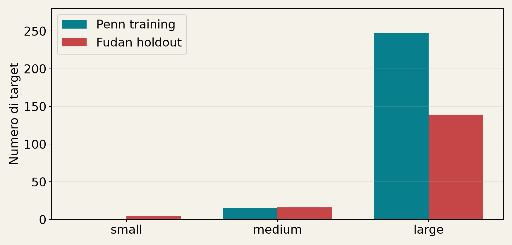
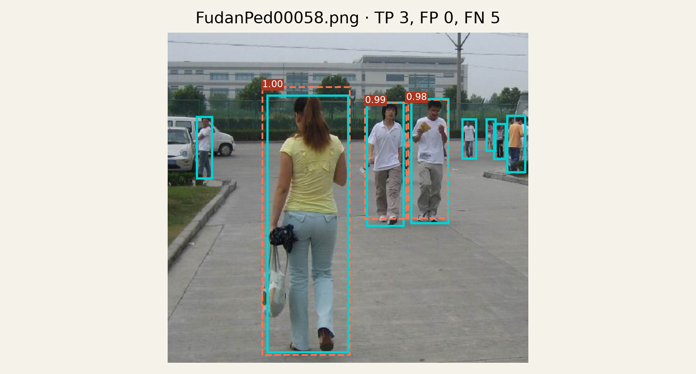
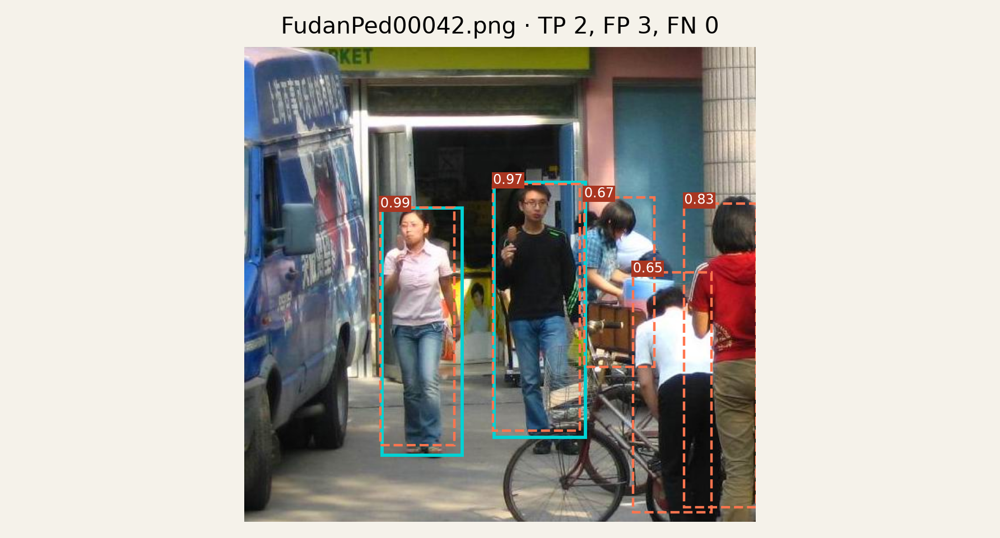
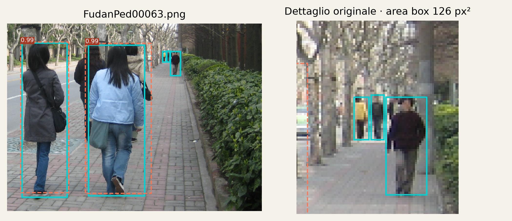

Computer Vision. Corsa CPU realmente eseguita. Training e tempi sono importati dal riferimento, non nuove misure sul dispositivo di chi legge. Split: 96 immagini Penn per il training e 74 Fudan per il holdout; 423 istanze nelle maschere, rispettivamente 263 e 160. La sola testa di predizione è adattata per 3 epoche fissate prima della misura, con 144 aggiornamenti. Una sola categoria: persona.
| Metrica [0, 1] | Epoca 0 | Epoca 3 |
|---|---|---|
| AP | 0.016812 | 0.675425 |
| AP50 | 0.063363 | 0.937699 |
| AP75 | 0.000888 | 0.869169 |
| AP_small | 0.000049 | 0.015594 |
| AP_medium | 0.002113 | 0.271887 |
| AP_large | 0.062460 | 0.734335 |
| AR100 | 0.355000 | 0.720625 |
Supporto del holdout: 5 small, 16 medium, 139 large. AP per dimensione usa l’area originale del box e le regole ignore COCO. Punto operativo con score ≥ 0.5 e IoU ≥ 0.5: 146 TP, 20 FP, 14 FN. Il risultato non misura capacità multicategoria.






Training: 25.040 s. Latenza batch 1: mediana 64.845 ms. Il fit include lettura delle immagini, forward, backward e SGD; esclude evaluation. La latenza include trasformazione interna, detector, NMS e postprocess, escludendo disco e trasferimento al dispositivo. Tre warm-up e sette ripetizioni.
Ambiente: {'torch': '2.14.0', 'torchvision': '0.29.0', 'numpy': '2.3.5', 'python': '3.12.14', 'device': 'cpu', 'processor': 'arm', 'platform': 'macOS-26.6.2-arm64-arm-64bit', 'threads': 1, 'gpu': None}
Figure PennFudan, Wang, Shi, Song, Shen (ACCV 2007), con annotazioni e output del laboratorio. Copyright degli autori; nessuna licenza aperta attribuita. Fonte: pagina ufficiale.
JSON completo. Il notebook Ripristino_risultati.ipynb ricostruisce una nuova inferenza senza addestrare.